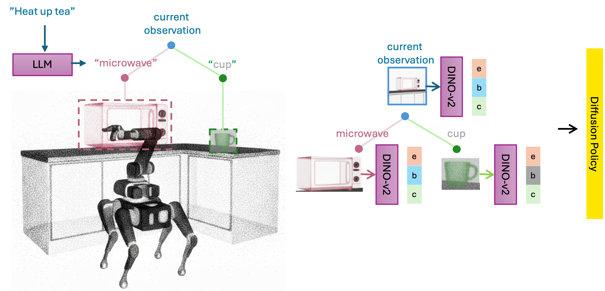
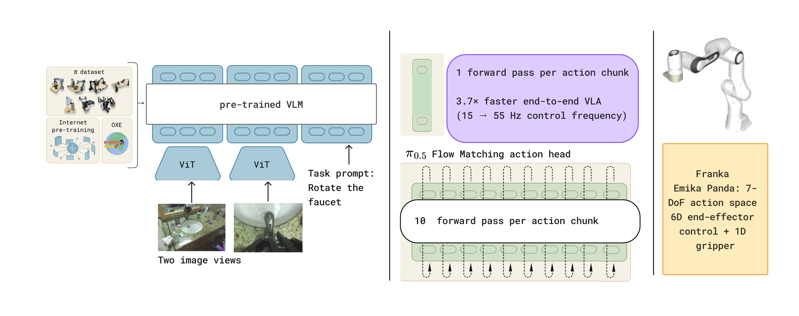
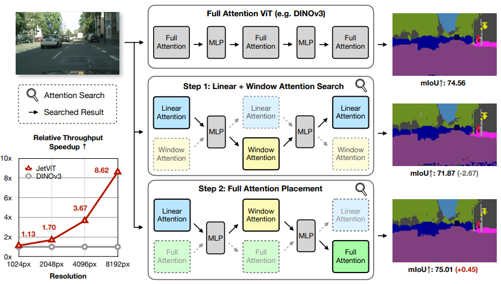
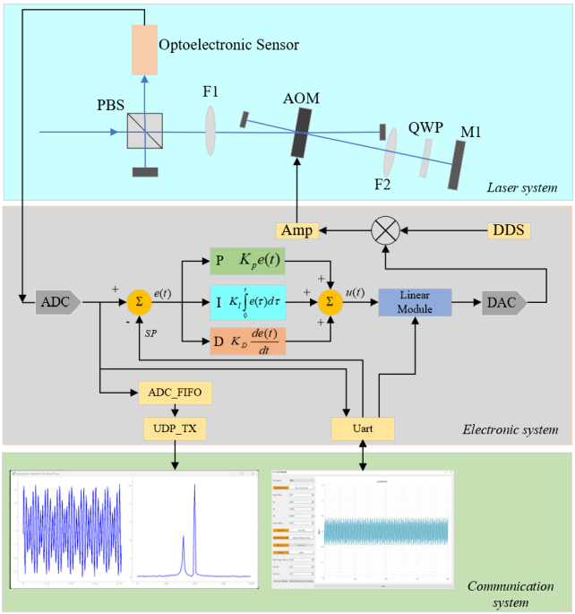

Graduate Researcher / Scholar
Qinhe Peng 彭沁禾
I am currently a ROBO MSE student at the University of Pennsylvania, advised by Dinesh Jayaraman.
Previously, I received my Electrical Engineering bachelor's degree from Tsinghua University.
Publications
Selected Papers
-

-

IROS 2026
PI-IMLE: Fast Single-Step Action Generation for Vision-Language-Action Policies
-

CVPR 2026
JetViT: Efficient High-Resolution Vision Transformer with Post-Training Attention Search
Dongyun Zou, Zhuoyang Zhang, Junyu Chen, Wenkun He, Qinhe Peng, Hanrong Ye, Yao Lu, Hongxu Yin, Yu Wang, Song Han, Han Cai.
-

IEEE SENSORS 2024 / Oral
A Closed-Loop Control System with Ultrafast Monitoring Based on a Photoelectric Sensor
Yuanming Yang, Qinhe Peng, Xinxing Yuan, Panyu Hou, Binxiang Qi, Luming Duan.
Contact